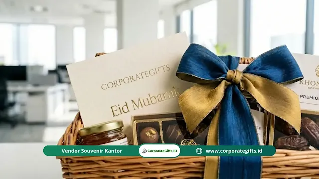

Corporate Gifts ID - Tips memilih vendor hampers Lebaran kantor yang tepat meliputi pengecekan reputasi vendor, pengujian kualitas produk dan kemasan, transparansi harga tanpa biaya tersembunyi, serta jaminan ketepatan waktu pengiriman. Pemilihan vendor yang kredibel penting untuk menjaga citra profesional perusahaan dan memastikan efisiensi anggaran pengadaan corporate gifts.
Bagi divisi procurement maupun human resources, rutinitas tahunan membagikan bingkisan untuk klien, mitra bisnis, dan karyawan sering kali mendatangkan kepanikan jika pesanan tak kunjung datang. Realitasnya di lapangan, banyak perusahaan yang terjebak penawaran harga murah namun berakhir dengan kualitas kemasan penyok atau isi makanan yang mendekati masa kedaluwarsa.
Poin Kunci Memilih Vendor Hampers Lebaran Kantor:
- Audit Legalitas & Portofolio: Pastikan vendor berbadan hukum resmi (PT/CV) dan memiliki riwayat sukses menangani pesanan institusi besar.
- Standar Higienitas & Expired Date: Wajib memastikan makanan/minuman memiliki izin edar BPOM, Halal, serta masa simpan minimal 6 bulan ke depan.
- Proteksi Kemasan Ekspedisi: Struktur boks harus kokoh (rigid box / anyaman kuat) dengan partisi dalam peredam guncangan selama distribusi.
- Rincian Biaya Transparan: Mintalah quotation resmi yang merinci biaya material, jasa custom branding, pajak faktur, hingga tarif kargo ekspres.
- Timeline Produksi & Buffer Time: Jadwalkan pengiriman tiba minimal 7 hingga 10 hari sebelum cuti bersama hari raya dimulai.
Mengapa Pemilihan Vendor Hampers Kantor Sangat Krusial?
Ibarat merekrut partner bisnis strategis, proses seleksi penyedia jasa parsel membutuhkan ketelitian ekstra. Keputusan yang ceroboh tidak hanya merugikan anggaran operasional, tetapi juga berisiko mencoreng nama baik instansi di hadapan relasi kunci:
- Menjaga Citra Profesional Perusahaan: Bingkisan yang dikirimkan mewakili wajah dan standar mutu instansi Anda. Saat klien VIP menerima kemasan yang rapi dan elegan, persepsi profesionalisme terhadap bisnis Anda akan langsung meningkat.
- Efisiensi Waktu Kerja Tim Internal: Bekerja sama dengan penyedia hampers dan parcel perusahaan yang berpengalaman menghemat puluhan jam kerja divisi Anda. Sistem pelaporan progres yang teratur membebaskan panitia dari rasa cemas.
- Memastikan Anggaran Tepat Sasaran: Alokasi dana korporat selalu memiliki batas maksimal yang harus dipertanggungjawabkan ke manajemen. Vendor tepercaya membantu meramu komposisi bingkisan bernilai tinggi tanpa melebihi batas plafon anggaran.
- Menyelami Nilai Filosofis Kemitraan: Tradisi berbagi jelang hari raya Idul Fitri adalah wujud apresiasi tulus serta sarana merawat client retention agar relasi bisnis tetap solid sepanjang tahun.
Kriteria Kualitas Produk Hampers yang Wajib Dicek
Kemasan luar adalah impresi pertama, sementara mutu isi menentukan seberapa tinggi penghargaan Anda dirasakan oleh penerima. Kedua elemen ini wajib tampil sempurna:
1. Kesesuaian Identitas Merek (Custom Branding)
Pastikan desain kemasan selaras dengan brand guideline perusahaan Anda. Vendor premium menyediakan opsi kustomisasi logo via hot stamp foil emas/perak, plat grafir, pita satin eksklusif, hingga kartu ucapan bernada personal dengan tanda tangan direksi.
2. Inspeksi Ketat Masa Kedaluwarsa Produk
Langkah ini sangat vital terutama apabila isi parsel didominasi kue kering artisan atau minuman herbal. Wajib pastikan tanggal kedaluwarsa produk minimal enam bulan dari tanggal distribusi guna menjamin keamanan konsumsi.

Kombinasi kemasan hampers hari raya Idul Fitri eksklusif berhiaskan pita satin dan kartu ucapan kustom.
3. Daya Tahan Material Kemasan Saat Ekspedisi
Tanyakan detail pelindung struktur dalam boks (seperti partisi busa EVA atau shredded paper padat). Bingkisan harus tahan banting selama proses logistik darat maupun udara, terutama saat pengiriman masif ke cabang luar kota.
4. Pembaruan Konsep Desain yang Fungsional
Perhatikan tren hampers Lebaran terkini yang memadukan sajian kuliner dengan cinderamata bernilai pakai tinggi, seperti executive gift set custom, tumbler stainless premium, atau aroma diffuser meja kerja.
5. Kesadaran Lingkungan dan Prinsip Eco-Friendly
Perusahaan modern kian memprioritaskan isu keberlanjutan. Memilih opsi kemasan dari kardus daur ulang estetik atau keranjang bambu organik akan melesatkan citra positif perusahaan di mata publik.
Bagaimana Cara Mengecek Reputasi Vendor Secara Akurat?
Janji manis penawaran harga sering kali tidak berbanding lurus dengan hasil akhir saat pesanan dikirimkan. Terapkan 4 langkah audit berikut sebelum menandatangani surat perjanjian:
- Validasi Portofolio Klien Korporat: Telusuri daftar klien B2B, instansi perbankan, BUMN, atau perusahaan multinasional yang pernah bekerja sama dengan vendor tersebut.
- Penelusuran Jejak Digital Organik: Cari ulasan pembeli di Google Maps, media sosial, atau LinkedIn. Keluhan berulang mengenai keterlambatan paket adalah red flag utama.
- Uji Kecepatan Komunikasi Customer Service: Hubungi admin vendor pada jam kerja sibuk untuk menilai tingkat responsivitas, keramahan, dan ketepatan solusi teknis yang diberikan.
- Mintalah Sampel Fisik (Prototype): Memeriksa sampel fisik memungkinkan panitia memvalidasi ketebalan karton boks, keharuman produk, serta kerapian jahitan pita secara langsung.
Tabel Matriks Kriteria Evaluasi Vendor Hampers Lebaran
Gunakan parameter komparasi berikut saat menyeleksi beberapa kandidat vendor bingkisan hari raya:
| Parameter Evaluasi | Vendor Konvensional | Vendor Spesialis B2B (CorporateGifts.ID) | Manfaat bagi Panitia |
|---|---|---|---|
| Fleksibilitas Branding | Pilihan terbatas / stiker biasa | Custom rigid box, pita monogram, hot stamp foil | Memperkuat identitas brand secara prestisius |
| Legalitas & Dokumen | Kwitansi non-PKP standar | Badan usaha resmi (PT/CV), Faktur Pajak PPN | Kelancaran audit pertanggungjawaban keuangan |
| Layanan Sampel 3D | Hanya gambar brosur generik | Mockup 3D digital gratis & pengiriman sampel fisik | Mempermudah persetujuan anggaran pimpinan |
| Kapasitas Produksi | Terbatas (puluhan boks) | Kapasitas ribuan paket B2B per hari | Bebas risiko bottleneck di peak season |
| Jaminan Distribusi | Lepas tangan setelah paket diposkan | Tracking terpadu & garansi retur jika rusak | Paket mendarat aman di tangan klien & karyawan |
Rahasia Transparansi Harga Tanpa Biaya Tersembunyi
Penyusunan anggaran sering kali menjadi tantangan terbesar panitia. Terapkan strategi berikut agar anggaran pengadaan tetap terkendali tanpa kompromi pada kualitas:
- Minta Rincian Biaya Tertulis (Itemized Quotation): Hindari penawaran harga borongan. Minta penjual merinci biaya cetak kotak, harga satuan isi, jasa assembling, hingga PPN.
- Manfaatkan Diskon Volume (Tiered Pricing): Pengadaan kuantitas besar selalu membuka peluang negosiasi harga tiering yang lebih kompetitif.
- Pilih Kombinasi Isi yang Fleksibel: Bermitralah dengan vendor yang membebaskan Anda mengombinasikan aneka produk untuk menyesuaikan profil penerima dan anggaran.
- Hitung Ongkos Logistik Kargo Sejak Awal: Pastikan vendor memiliki rekanan ekspedisi dengan tarif kargo bisnis agar biaya pengiriman antarprovinsi tidak membengkak.
Mengapa Ketepatan Waktu Adalah Segalanya di Peak Season?
Sebagus apa pun bingkisan, semuanya akan sia-sia jika parsel tiba setelah jadwal cuti bersama hari raya dimulai. Arus lalu lintas logistik nasional menjelang libur panjang selalu mengalami lonjakan ekstrem.
Untuk mengantisipasinya, pastikan kontrak kerja sama memuat tenggat waktu serah terima paling lambat H-10 sebelum Idul Fitri. Vendor profesional selalu menyediakan fasilitas pemantauan status terpadu serta protokol mitigasi kerusakan saat barang transit di gudang kargo.
Kesimpulan
Pemberian hampers instansi bukan sekadar menggugurkan kewajiban seremonial tahunan belaka. Ada nilai investasi hubungan profesional jangka panjang yang Anda bangun melalui setiap bingkisan yang terkirim dengan sempurna. Dengan riset teliti, penganggaran presisi, dan pemilihan mitra kerja yang kredibel, proses pengadaan ini akan berlangsung tenang dan sukses.
Ingin merancang paket hampers Lebaran eksklusif untuk kantor Anda? Konsultasikan konsep tema, sampel mockup gratis, dan katalog penawaran resmi bersama tim spesialis kami di Corporate Gifts ID hari ini.
Pertanyaan Seputar Vendor Hampers Lebaran (FAQ)

Ditulis oleh: Arinda Zakia
Senior Corporate Gifting SpecialistPraktisi riset pasar dan konsultan pengadaan corporate merchandise dengan pengalaman lebih dari 7 tahun. Arinda aktif mengkurasi tren cinderamata ramah lingkungan, etika pemberian hadiah korporasi tingkat direksi (VIP Gifting), serta strategi efisiensi anggaran pengadaan souvenir bagi perusahaan swasta, perbankan, dan BUMN di Indonesia.
Lihat Profil Lengkap & Panduan Lainnya